Curve Fitting (Regression) with Polynomials: The polyfit Function
Polynomials can be used to fit data points in two ways. In one the polynomial passes through all the data points, and in the other the polynomial does not necessarily pass through any of the points but overall gives a good approximation of the data. The two options are described below.
Contents
Polynomials that pass through all the points:
When n points 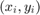 are given, it is possible to write a polynomial of degree n - 1 that passes through all the points. For example, if two points are given it is possible to write a linear equation in the form of 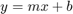 that passes through the points. With three points, the equation has the form of 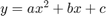. With n points the polynomial has the form
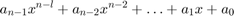$.
The coefficients of the polynomial are determined by substituting each point in the polynomial and then solving the n equations for the coefficients. As will be shown later in this section, polynomials of high degree might give a large error if they are used to estimate values between data points.
Polynomials that do not necessarily pass through any of the points:
When n points are given, it is possible to write a polynomial of degree less than n - 1 that does not necessarily pass through any of the points but that overall approximates the data. The most common method of finding the best fit to data points is the method of least squares. In this method, the coefficients of the polynomial are determined by minimizing the sum of the squares of the residuals at all the data points. The residual at each point is defined as the difference between the value of the polynomial and the value of the data.
For example, consider the case of finding the equation of a straight line that best fits four data points as shown below

The points are 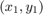, 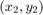, 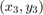, and 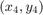, and the polynoymial of the first degree can be written as
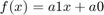
The residual, 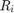, at each point is the difference between the value of the function at 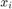 and 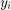
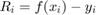 .
An equation for the sum of the squares of the residuals of all the points is given by:
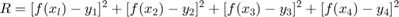
or, after substituting the equation of the polynomial at each point, by:
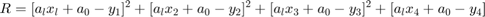
At this stage R is a function of 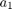 and 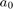. The minimum of R can be determined by taking the partial derivative of R with respect to a1 and a0 (two equations) and equating them to zero:

and
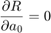
This results in a system of two equations with two unknowns, and . The solution of these equations gives the values of the coefficients of the polynomial that best fits the data. The same procedure can be followed with more points and higher-order polynomials. More details on the least squares method can be found in books on numerical analysis.
polyfit(x,y,n)
Curve fitting with polynomials is done in MATLAB with the polyfit function, which uses the least squares method. The basic form of the polyfit function is:
$$p = polyfit(x,y,n)
p is the vector of the coefficients of the polynomial that fits the data.
x is a vector wi the horizontal coordinates of the data points (independent variable). y is a vector with the vertical coordinates of the data points (dependent variable). n is the degree of the polynomial.
For the same set of m points, the polyfit function can be used to fit polynomials of any order up to n = m - 1. If n = 1 the polynomial is a straight line, if n = 2, the polynomial is a parabola, and so on. The polynomial passes through all the points if n = m -1 (the order of the polynomial is one less than the number of points). It should be pointed out here that a polynomial that passes through all the points, or polynomials with higher order, do not necessarily give a better fit overall. High-order polynomials can deviate significantly between the data points.
Curve Fitting with Functions Other than Polynomials
What if the application requires that you fit the data using functions that are not polynomials. This sections describes Matlab's curve fitting capabilities in these situations. We will find that some functions fit the data better than others. We will cover curve fitting using polyfit with the following functions.

Step 1:
Rewrite the functions in a form that can be fitted with the linear polynomial (n=1), which is
For example

If we define new variables,
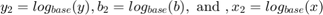
We can rewrite the orignal equation as a first order equation in 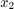 as
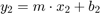
The result is shown below:

Note the linear relationships between
- ln(y) and ln(x) or log(y) and log(x) (power funtion)
- ln(y) and x (exponential function)
- log(y) and x (exponential function (base 10))
- 1/y and x (reciprocal function)
- y and ln(x) or y and log(x) (logarithmic function)
Step 2:
The linear relationship above are cool, because we can now just use the polyfit(x,y,1) form to calculate the best fit with the following substitutions for the arguments
Step 3:
The result of the substitution is a two element vector p with
- p(1) representing the value for the constant m
- p(2) is the value of b needed for the appropriate form of the intercept.
Estimating the best form for the approximation
If you plot the data using different combinations of linear and logarithmic axes, you can get a good idea of which approxmiation to use by taking note of which combination results in a plot that appears to fit a straight line. The following graphic shows some good combinations:

Other Things you might want to consider when choosing a function
- Exponential functions cannot pass through the origin
- Exponential functions can only fit dat with all positive y's or all negative y's
- Logarithmic function cannot model x = 0 or negative values of x
- For the power function y=0 when x = 0
- The reciprocal equation cannot model y = 0
Let's do an example problem
Example Problems
18, 21, 24, 25